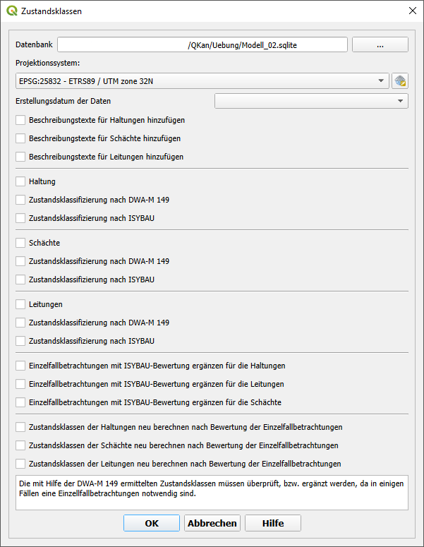

Zustandsklassifizierung
Zustandsklassifizierung
Um das Plugin Zustandsklassen zu nutzen, muss im Vorhinein eine Datenbank mit den notwendigen Informationen mit Hilfe des Plugins QKan erstellt werden. Dafür muss das Plugin QKan heruntergeladen werden und im Plugin Ordner von QGIS gespeichert werden. Dann kann zum Beispiel die Funktion „Import aus ISYBAU-XML“ genutzt werden um die Stammdaten und die Befahrungsdaten zu importieren. Mit Hilfe dieser Funktion wird eine QKan Datenbank erstellt, die alle benötigten Information für das Plugin Zustandsklassen enthält. Um die Zustandsklassen nun zu ermitteln, muss über die Menüleiste in QGIS die Schaltfläche „QKan“ geklickt werden. Dort kann das Plugin Zustandsklassen ausgewählt werden.
Daraufhin öffnet sich das im folgenden gezeigte Eingabefenster:
- In dem Eingabefenster sind folgende Eingaben möglich:
Datenbank
Projektionssystem
Auswahl der Daten nach Datum
Auswahl ob Beschreibungstexte eingefügt werden sollen
Auswahl Ob Zustandsklassifizierung der Haltungen nach DWA oder ISYBAU
Auswahl ob Zustandsklassifizierung der Schächte nach DWA oder ISYBAU
Auswahl Ob Zustandsklassifizierung der Hausanschlussleitungen nach DWA oder ISYBAU
Einzelfallbetrachtung durch ISYBAU ergänzen
Neuberechnung der Zustandsklassen
In dem Eingabefenster wird zunächst die Datenbank ausgewählt, die für die Berechnung der Zustandsklassen genutzt wird. Danach wird das Projektionssystem ausgewählt. Wenn eine Datenbank ausgewählt wurde, erscheinen je nach Auswahl des Datumstyps die Erstellungsdaten oder die Befahrungsdaten der einzelnen Datensätze. Dann kann jeweils für die Haltungen, Hausanschlussleitungen und Schächte ausgewählt werden, Ob die Zustandsklassen nach DWA-M 149 Oder nach ISYBAU ermittelt werden sollen. Mit einem Klick auf OK wird das Plugin gestartet und eine Klassifizierung vorgenommen. Nachdem das Plugin durchgelaufen ist, sind die neuen Daten in der Datenbank enthalten und neue Layer wurden dem Projekt zugefügt. Wenn die Klassifizierung nach DWA-M 149 durchgeführt wurde, werden die in der folgenden Abbildung gezeigten Layer für die Haltungen und Schächte dem Projekt hinzugefügt.
Bei einer Klassifizierung nach ISYBAU werden die in der folgenden Abbildung gezeigten Layer für die Haltungen und Schächte dem Projekt hinzugefügt.
Bei einer Klassifizierung nach DWA-M 149 gibt es bei einigen Schäden die Klassifizierung „Einzelfallbetrachtung“. Diese können wie nach DWA vorgesehen über die Attributtabelle händisch nach bewertet werden. Alternativ bietet das Tool „Zustandsklassen“ die Möglichkeit eine automatisierte Ergänzung der „Einzelfallbetrachtungen“ durch eine Bewertung nach ISYBAU vorzunehmen. Im Nachgang an diese Ergänzungen ist die Neuberechnung der Gesamtklassifizierung notwendig. Dies kann mit dem Punkt „Zustandsklassen der Haltungen neu berechnen nach Bewertung der Einzelfallbetrachtung“ durchgeführt werden.
Alternativ kann die Zustandsklassifizierung auch übersprungen werden und nur die Tabellen angelegt werden. Dabei werden schon vorhandene Klassifizierungen aus den Grundlagentabellen übernommen.